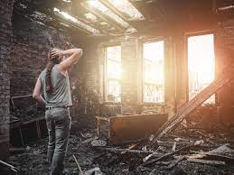

Introducción:
Los incendios no solo dejan a su paso devastadores daños estructurales, sino también residuos y contaminantes que pueden tener consecuencias perjudiciales para la salud humana. La limpieza de paredes después de un incendio se convierte, entonces, en una tarea vital no solo para la limpieza estética, sino también para la eliminación de residuos tóxicos. En este extenso artículo, exploraremos detalladamente las estrategias técnicas y efectivas para llevar a cabo la limpieza de paredes post-incendio, teniendo en cuenta los riesgos para la salud y el ambiente.
1. Evaluación Inicial:
La primera etapa es una evaluación minuciosa de los daños. ¿Cuál fue la extensión de la exposición al fuego? ¿Cuánto hollín y humo se ha depositado en las paredes? Identificar estos factores es esencial para desarrollar un plan de limpieza personalizado y efectivo.
2. Equipamiento de Protección Personal (EPP):
Antes de comenzar cualquier actividad de limpieza, es imperativo que el personal involucrado utilice EPP adecuado. Esto incluye trajes resistentes al fuego, mascarillas de respiración N95 o superiores, guantes resistentes al calor y gafas protectoras. La seguridad del equipo de limpieza es fundamental para evitar la exposición a sustancias tóxicas y partículas suspendidas en el aire.

3. Eliminación de Residuos Gruesos:
La eliminación de residuos gruesos, como restos de madera quemada y otros materiales carbonizados, es la primera fase. Utilizar herramientas especializadas como palas, escobas resistentes al calor y aspiradoras industriales facilita esta tarea.
4. Limpieza de Hollín y Humo:
El hollín y el humo pueden adherirse firmemente a las superficies de las paredes, lo que requiere métodos específicos para su eliminación. La limpieza en seco con esponjas químicas y cepillos de cerdas duras puede ser eficaz para eliminar capas superficiales. Para áreas más afectadas, la aplicación de soluciones de limpieza especializadas diseñadas para disolver hollín y humo es esencial. La limpieza húmeda con agentes desengrasantes puede ser necesaria en ciertos casos.
5. Riesgos para la Salud:
Es crucial destacar los riesgos para la salud asociados con la exposición a los residuos de incendios. El hollín y el humo contienen partículas finas que, al inhalarse, pueden causar problemas respiratorios, irritación en los ojos y agravar condiciones preexistentes. La limpieza inadecuada puede aumentar estos riesgos.
Consulta cómo protegerte de los riesgos para la salud durante la limpieza de incendios y limpieza post-incendio.
6. Descontaminación:
Dada la posibilidad de contaminación química en casos de incendios industriales o con productos peligrosos, la descontaminación de las paredes es esencial. La aplicación de agentes neutralizantes y desinfectantes elimina cualquier residuo químico peligroso que pueda haberse depositado durante el incendio.
7. limpieza de Superficies:
Una vez que la limpieza ha sido completada, es necesario abordar cualquier daño estructural en las paredes. Esto podría implicar la limpieza de grietas, la aplicación de selladores y, en casos extremos, la reconstrucción de secciones afectadas.
8. Monitoreo de Calidad del Aire:
Después de la limpieza, realizar pruebas de calidad del aire es crucial para garantizar que no queden residuos tóxicos en el ambiente. Equipos de monitoreo de partículas y gases son útiles para evaluar la pureza del aire y tomar medidas correctivas si es necesario.
Descubre soluciones innovadoras para la limpieza de incendios y limpieza post-incendio visitando el sitio web de Nano Nex.